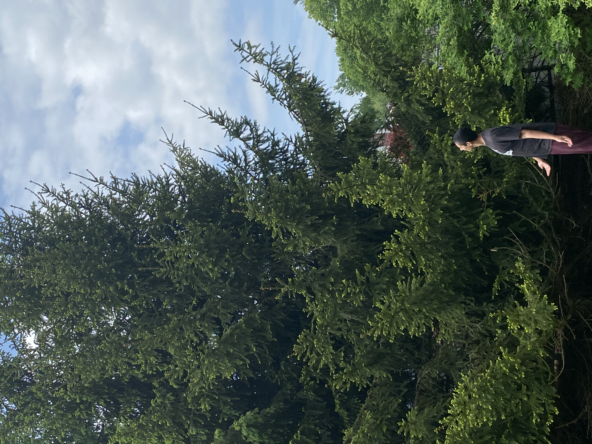

How I Measured the Height This Tree
And Why You Should Measure One Too
By Seth Lupo

Introduction
You may be asking yourself how I actually measured this tree. Well, how did I? At a glance, that tree looks enormous. Did he climb all the way up there? I can tell you for sure that I am not that good of a climber. What I did do is use geometry. Geometry, seemingly banished to the occasional word problem and SAT question, can be used elsewhere. Actually, it can be used almost anywhere. It can even help me climb to the top of this tree and measure its height without even leaving the ground.
There are two main methods which you could use to find the height of a tree. One is less exact, yet it requires fewer calculations and tools. I will call the first option the “Forestry Method”. The second option is much more exact but involves more calculations and tools. I will call the second option the “Trig Method” because it involves trigonometric functions. I suggest trying both of them out to see which one you enjoy more.
The Forestry Method
For this method, all you will need is a yardstick or measuring tape.
First, you need to measure your stride (how long each of your steps are). You can do this by taking a normal step next to your yardstick or measuring tape laid flat on the ground. I noticed that my normal strides were consistently one yard (3 feet). Try to be somewhat precise, since any incorrect numbers here can cause the tree’s height to fluctuate wildly.

Next, I used my measuring tape to see how far I can reach from my body. I measured how far I could reach a few times until I started to get consistent results. The farthest I could reach from my body was about 29 inches.
Now, here are the key steps; hold your arm directly forward, perpendicular to your body. From there, have your measuring tape or yardstick point straight up, perpendicular to your arm. Make sure that the measuring tape is sticking up the same distance you can reach. That means my measuring tape was currently extended 29 inches, just like my arm was. Your head, hand, and the top of the measuring tape or yardstick should make an isosceles right triangle.

Look at the tree and compare it to your yardstick or measuring tape. Check if they look the same size from your perspective. If the tree looks too small, you need to walk closer. If the tree looks too big, you need to walk farther away.
When their “apparent length” looks equal, record where your standing. Personally, I placed down my measuring tape to remember where I was. Then, I walked towards the tree, counting how many steps it took me to get to the base of the tree. I was about 13 steps away, so for me, I stood 39 feet from the tree.
Since I was 39 feet from the tree, the tree is about 39 feet tall.
But why! Why would the tree’s height be the same distance as your distance away from it? Well, in short, it is because of isosceles right triangles.
When you hold out your measuring device from your body, you make an isosceles right triangle. Your arm and measuring device are the same lengths, and they both meet at a right angle. Also, the top of the tree, the base of the tree, and yourself make another triangle. But how do you know that this larger triangle is also a right isosceles right triangle?
If your arm continued to extend, it would reach the base of the tree. The only caveat is that your arm would need to point slightly downward to reach the base of the tree. When the line extending from your arm reaches the base of the tree, it nearly forms a right angle. This is because the tree is perpendicular to the ground. Since your arm is pointed slightly downwards, however, your arm is not parallel to the ground, being slightly off. This means, though nearly right, that angle is not exactly 90-degrees. It is slightly smaller than 90 degrees. This is the main reason why this method is not the most accurate because this skews your answer.
But we know another angle, the angle that is formed at you. We know this angle has to be the same angle as the one from the other smaller isosceles right triangle. Remember when you wanted the apparent length of the tree and measuring tool to be the same? That means when you look up to the top of the tree, from your perspective, it is as high as the tip of the measuring tape or yardstick. You are looking up at the same “angle of elevation” to see the top of both of them. So since the small triangle must have a 45-degree angle there (all isosceles triangles have two 45 degree angles) the large triangle must also have a 45-degree angle.
Another inaccuracy with this method is that the angle of the larger triangle is slightly larger than the corresponding 45-degree angle on the smaller triangle. Remember, the larger triangle’s bottom side slopes slightly downward. That means that angle is slightly larger than 45 degrees.
Since the triangle has a nearly 45-degree angle and a nearly 90-degree angle, it must be also nearly a 45, 45, 90 triangle. In other words, it is almost another isosceles right triangle. Because that triangle is almost isosceles, the bottom leg (your distance to the tree) must be approximately equal to the other leg. The other leg is the height of the tree, so your distance from the tree is approximately its height. Even though it is not exact, it can give you a good estimate.
If you do want something more exact, you need to use the trig method.
The Trig Method
For this method, alongside a measuring tape or yardstick, you will need to use a clinometer.
A clinometer is really what it sounds like. It measures “incline”. While you could order one off of Amazon, you can make one simply with the materials you have at home.
In order to make a clinometer, you will need five key things: a long straight stick, string, tape or an adhesive, a protractor, and some sort of weight. If you do not have a protractor, you could download one right here. Cut it out and glue it to some cardboard or manila folder so it remains stiff. You can use almost anything as a weight. I personally used a marker. Then you need to tape or glue the straight side of the protractor to the stick. Make sure that zero degrees on the protractor is furthest from the part of the stick you are going to hold. When you’re done with that, you should attach your string to the stick. Tape or glue the string to the part of the stick which lies in the middle of the protractor. Then, on the other end of the string, attach a weight of your choice.

To use the clinometer, you need to point the stick at the thing you are looking at. Find where the string falls in relation to the protractor. Look at the number on the protractor the string passes. Then take away 90 degrees from that number. That is the angle of elevation (or the angle of depression if the stick is pointing downwards) of that stick.
To also use this method, you need to measure your stride. For use in the previous method, I found out that I found my stride was exactly 3 feet per step.
Now you can finally start measuring the tree. First, you need to go to a known distance away from the tree. You can do this by measuring the distance with your stride. I decided to walk 13 feet away from the tree because I have already marked that point for the previous method.
Then use your clinometer and record the angle from your shoulders to the top of the tree. The clinometer said it was at a 46-degree angle.

The final thing that we need to measure is how far your shoulders are off the ground. Personally, my shoulders are about 5 feet off the ground. With that, we have all the data we need to calculate the tree’s height.
But in order to know how to calculate it, we need to understand some geometry.
In this diagram, we see another right triangle. Notice that this one is exactly right, so the answer is going to be more exact than the forestry method. We know two things about this right triangle: One of its angles is equal to 46 degrees, and the adjacent side to that angle is equal to 39 ft. From here, we can use trig to find the opposite side to the known angle.
Remember, the tangent function takes in an angle and spits out the ratio between the opposite side and adjacent side. Knowing this, we can set up an equation:
Here we can finally solve for the height. The tan(46) represents the ratio between the opposite and adjacent sides but written as the tangent function. The other side shows the ratio written explicitly as itself, a ratio. The longer side is written as the (h - 5) because the opposite side of the triangle does not actually include the tree’s height below the person’s shoulders.
But using this method, I realized the tree was actually about 45.4 feet tall.
But you should take this number with a grain of salt. There are many places that small inaccuracies could show up. First of all, your pacing could be and is probably slightly off. Also, especially if you are using a homemade clinometer like me, it is probably somewhat inaccurate because of the weight swinging back and forth.
Actually, I know the reading my clinometer gave could be slightly inaccurate because I tried doing both methods from the same point in the yard. While using the forestry method, I proved that the angle that I made with the top of the tree, and the tip of my arm was 45 degrees. When I measured the angle with my clinometer from that point, as I have said, it read 46 degrees. Though both these methods both conflicted slightly with each other, I am glad that they both gave me rather similar answers (~45.4 ft vs ~39 ft).
Tips and Tricks
There are a few things that you could definitely do to make your final answer more accurate.
The number one thing you should do is stay on flat ground. Measure trees over terrain that doesn’t fluctuate much. If the terrain around the tree does fluctuate, when you measure your distance to the tree, you will take more steps. The distance to the tree will seem slightly longer because when you walk on uneven terrain, you can’t be walking in a straight line vertically. Since it is not straight, it is not going to be the shortest distance. Using either of these methods, the tree will seem slightly taller if measured on uneven terrain.
Also, in order to make your numbers more accurate, you should record much more data. Try using both these methods and see if they corroborate each other’s results. Also, try measuring the height from different points around the tree. It will take you some time, but by averaging out all the data, you will get a surprisingly accurate result.
The final tip, which I wish I had learned about earlier, was what type of tree to pick. With both of these methods, your end up walking to the base of the tree. If your tree is a particularly dense, and/or worse, full of prickly needles, you are going to have a tough time keeping consistent strides. That means your overall answer is also going to be considerably less accurate.
Why You Should Try This
Yah, I’m talking to you. Why don’t you try it?

You know your tree. The tree that is sitting out there, like it always does. If you turn away from your computer right now and look out the nearest window, you probably would see it. It has been there for almost forever, and it will probably stay there even after you are gone. Don’t you want to learn more about that tree during the brief, fleeting time you’re still here?
Maybe you don’t what I’m talking about, but if you do, you should go out and measure it.
Learn more about that tree. See how it changes, how it grows, what animals commonly live in it, and etc. I personally think the most interesting thing to do is identify what tree it exactly is. Click Here to identify a tree from your backyard (if you live in the US). I learned that my tree was called a Red Spruce. Its native range is much of northern New England and Quebec.
What surprised me about the Red Spruce is how long they live. On average, the Red Spruce could live 250 to 450+ years. Since my house was built in the late 90s, the tree was probably planted then too. That means the tree that I just measured could be living well into the 25th century.
Maybe you too could learn something fascinating about your tree.
All this enthusiasm is not coming from a person who originally loved trees. I hadn’t even thought about trees before this project aside from the context of environmentalism and global warming. Measuring a tree forced me to acknowledge it. It made me notice its sheer size, fresh piny fragrance, and beautiful deep green color. If I did not measure that tree, I would not have even noticed it. All of that pleasure that came from that one average Red Spruce would have ceased to exist.
Conclusion
I really enjoyed working on this project. It was a fun way to get outside, and it helped me practice a little bit of math as well. It was a fun thing to do while shut-in during quarantine. Going forward, I will try to record the height of that tree every year. I will see how it grows, while I’ll grow with it. Imagine being 65 years old with fifty years’ worth of data. Imagine showing your grandchildren about that one tree, that tree that has withstood fifty years of tumultuous history, still standing to that very day.
To be honest, I don’t think I will actually measure my tree consistently for fifty straight years. That’s a bit of a long shot. But who knows, whoever reading this might.